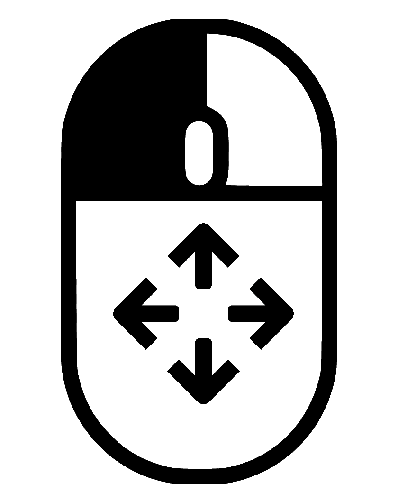
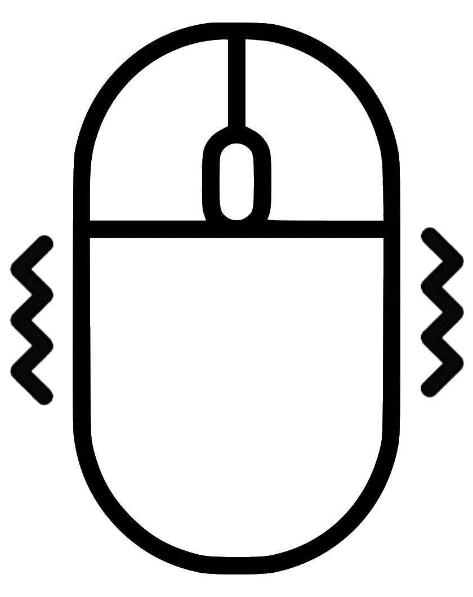

|
|
Annuler toutes les commandes de cliques en cours |
|
|
Clique Gauche Activé ou desactivé |
|
|
Clique droit activé ou désactivé |
|
|
Double cliques Gauche activé ou desactivé |
|  | Drag & Drop activé ou désactivé |
|  | Activé ou desactivé le stabilisateur de souris |
| Epingler la fenetre en stay on top | |
| Calibrer le logiciel |